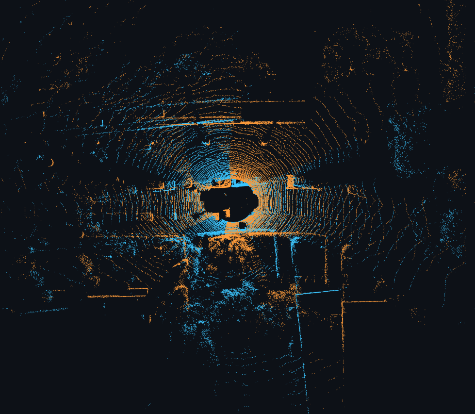
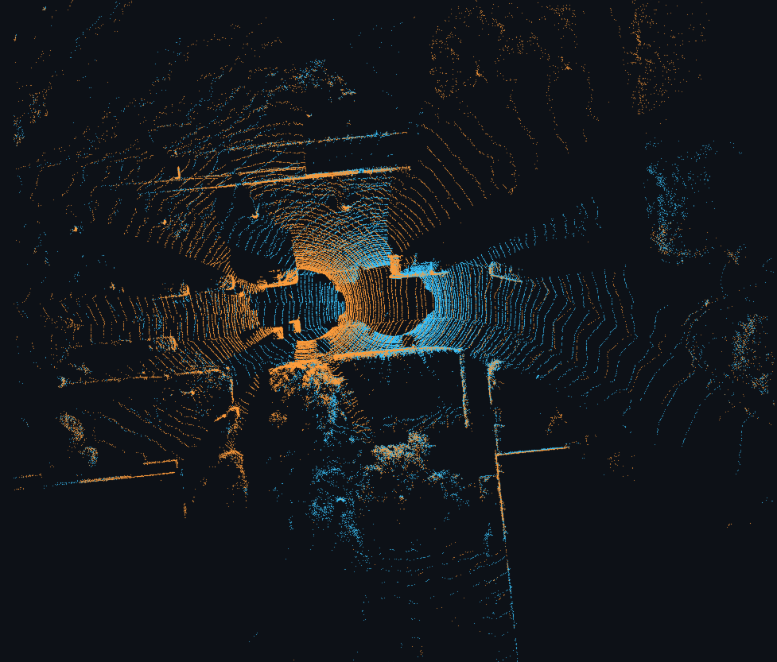
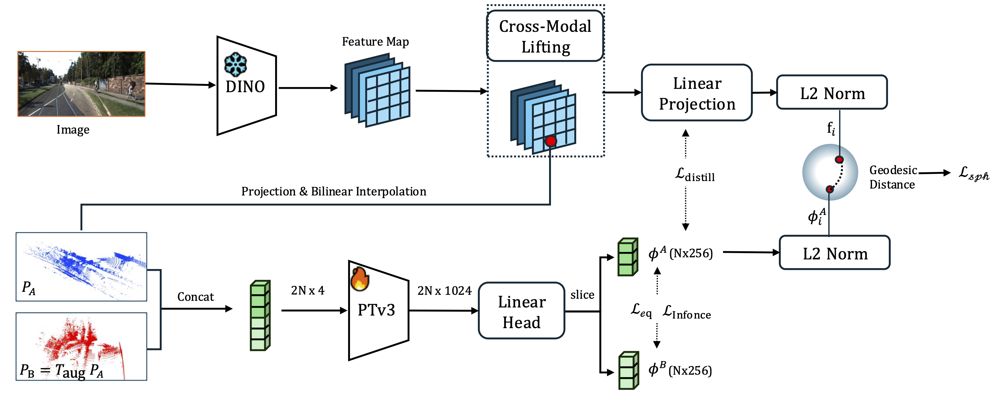
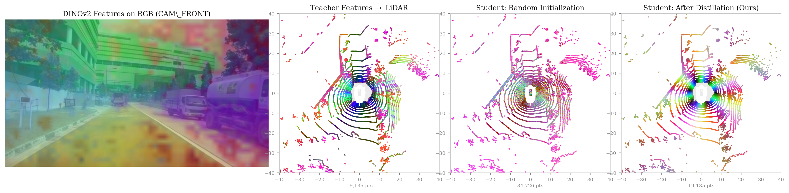
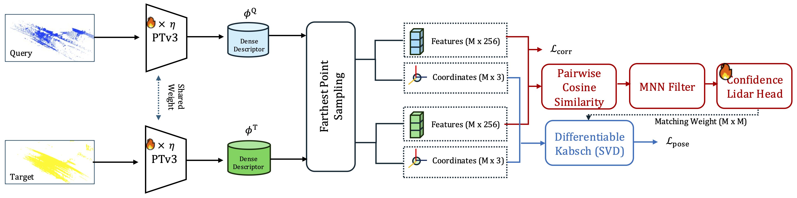
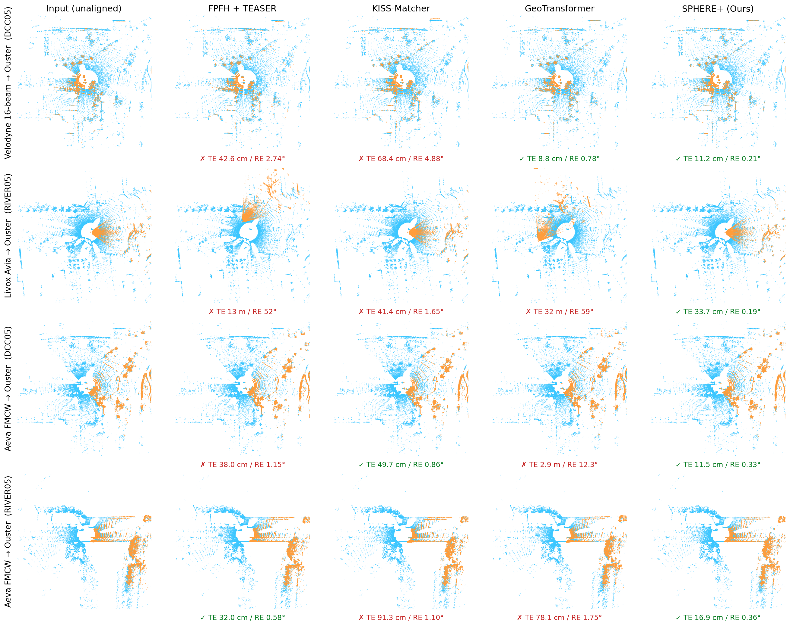

@article{helix2027,
title={HELIX: Hyperspherical Equivariant LiDAR–Image Cross-Modal Distillation for Universal Registration},
author={Anonymous},
journal={Under review at AAAI 2027},
year={2027}
}Learning-based global point cloud registration has achieved remarkable progress, yet existing methods rely predominantly on geometric representations, making them vulnerable to variations in point density, scan patterns, and viewpoints. To overcome this limitation, we propose HELIX, a robust learning-based global registration framework that distills semantic priors from a vision foundation model into LiDAR representations. The resulting semantic descriptors remain resilient to geometric degradation, enabling consistent registration across both single- and zero-shot cross-sensor LiDAR scenarios.
HELIX adopts a two-stage cross-modal distillation framework with a frozen DINOv2 teacher and a Point Transformer v3 (PTv3) student. Beyond contrastive distillation, we introduce spherical-manifold alignment (ℒsph), which transfers semantic knowledge while respecting the hyperspherical geometry of the teacher embedding space, and soft SE(3) invariance (ℒeq), which encourages viewpoint-invariant descriptors. Using a single model, HELIX generalizes across diverse LiDAR sensors without sensor-specific adaptation while remaining entirely camera-free at inference. On KITTI, nuScenes, and HeLiPR, it achieves strict recall (SR@0.5 m/1°) of 97.84%, 99.2%, and 95.8%, respectively—including 94.7% on sparse 16-beam Velodyne scans, outperforming BUFFER-X by up to 41.4 percentage points.
One checkpoint · camera-free inference · zero-shot cross-sensor registration
Strict SR@0.5 m/1°: KITTI 97.84% · nuScenes 99.2% · HeLiPR 95.8%
(Velodyne-16: 94.7%)
HeLiPR Velodyne VLP-16 query (orange) overlaid on an Ouster-128 reference map (blue), before and after HELIX.


HELIX aligns query scans onto reference maps across in-distribution (KITTI) and zero-shot cross-sensor (HeLiPR) settings. Videos loop automatically.

Teacher branch: dense DINOv2 patch features are lifted onto visible LiDAR points via projective geometry and bilinear interpolation. Student branch: a trainable PTv3 backbone encodes the original scan PA and an SE(3)-augmented view PB in one stacked pseudo-batch. Joint objectives combine cross-modal alignment (ℒdistill, ℒsph) inside the visibility mask ℳ with self-supervised perspective consistency (ℒinfonce, ℒeq).


After pretraining, the 2D teacher is removed. A weight-shared PTv3 extracts descriptors from query/target scans; FPS selects superpoints, mutual nearest neighbors with a confidence head form correspondences, and a differentiable Kabsch solver regresses the relative pose. Point-dropout augmentation bridges the density gap to sparse sensors (e.g., Velodyne-16). Inference uses a built-in mini-RANSAC initializer and local geometric refinement (LGR)—no cameras, no ICP.

A single HELIX checkpoint and unified inference recipe (built-in mini-RANSAC + LGR, no ICP) are evaluated on KITTI, nuScenes, and zero-shot HeLiPR. Primary metric: strict success rate SR@0.5 m/1°.
| Method | SR@2m/5° | SR@1m/2° | SR@0.5m/1° | RTE (m) ↓ | RRE (°) ↓ |
|---|---|---|---|---|---|
| FPFH + TEASER | 98.74 | 97.66 | 92.25 | 0.070 | 0.295 |
| RAP | 97.12 | 93.51 | 81.80 | 0.263 | 0.366 |
| KISS-Matcher | 97.12 | 87.75 | 66.31 | 0.140 | 0.723 |
| UGP | 99.82 | 99.64 | 97.66 | 0.060 | 0.189 |
| PARE-Net | 99.82 | 99.64 | 97.66 | 0.040 | 0.172 |
| GeoTransformer | 99.82 | 99.64 | 97.66 | 0.054 | 0.173 |
| CAST | 100.00 | 100.00 | 99.28 | 0.023 | 0.125 |
| HELIX (Ours) | 99.82 | 99.64 | 97.84 | 0.053 | 0.172 |
Sequences 08–10 (555 pairs). HELIX remains competitive with specialist geometric matchers on in-distribution 64-beam data.
| Method | SR@2m/5° | SR@1m/2° | SR@0.5m/1° | RTE (m) ↓ | RRE (°) ↓ |
|---|---|---|---|---|---|
| FPFH + TEASER | 87.4 | 87.4 | 85.6 | 0.090 | 0.302 |
| KISS-Matcher | 78.4 | 77.2 | 67.8 | 0.124 | 0.523 |
| GeoTransformer | 99.4 | 98.6 | 97.0 | 0.080 | 0.239 |
| BUFFER-X | 92.6 | 90.6 | 89.6 | 0.113 | 0.294 |
| HELIX (Ours) | 100.0 | 100.0 | 99.2 | 0.078 | 0.249 |
500 validation key-frame pairs (1–5 m gap). HELIX leads on all three success-rate thresholds.
Held-out KAIST05 / DCC05 / RIVER05 (600 pairs). Reference maps from Ouster-128; queries from Velodyne-16, Livox Avia, Aeva FMCW, and in-distribution Ouster. HeLiPR is never seen during HELIX training.
| Method | SR@0.5m/1° (%) ↑ | SR@1m/2° (%) ↑ | Med. RTE (m) ↓ | ||||||
|---|---|---|---|---|---|---|---|---|---|
| Ouster | Vel-16 | Avia | Aeva | Ouster | Vel-16 | Avia | Aeva | ||
| FPFH + TEASER | 100.0 | 2.5 | 30.0 | 60.0 | 100.0 | 16.2 | 53.3 | 86.7 | 1.080 |
| KISS-Matcher | 100.0 | 6.2 | 31.2 | 1.2 | 100.0 | 36.2 | 70.0 | 45.0 | 0.515 |
| RAP | 100.0 | 93.8 | 12.5 | 11.2 | 100.0 | 93.8 | 46.2 | 43.8 | 1.061 |
| CAST | 100.0 | 0.0 | 0.0 | 0.0 | 100.0 | 0.0 | 0.0 | 0.0 | 6.115 |
| GeoTransformer | 100.0 | 60.0 | 0.0 | 0.0 | 100.0 | 80.0 | 0.0 | 0.0 | 0.164 |
| UGP | 100.0 | 18.8 | 45.0 | 15.0 | 100.0 | 78.8 | 56.2 | 37.5 | 0.470 |
| PARE-Net | 78.8 | 52.5 | 37.5 | 27.5 | 100.0 | 61.3 | 55.0 | 43.8 | 0.535 |
| BUFFER-X | 100.0 | 53.3 | 82.7 | 94.0 | 100.0 | 91.3 | 100.0 | 99.3 | 0.269 |
| HELIX (Ours) | 100.0 | 94.7 | 90.0 | 98.7 | 100.0 | 95.3 | 91.3 | 98.7 | 0.118 |
Gains vs. BUFFER-X at strict threshold: Velodyne-16 +41.4 pp, Avia +7.3 pp, Aeva +4.7 pp. Median RTE reduced from 0.269 m to 0.118 m. Overall HeLiPR strict recall: 95.8%.
Stage-1 loss ablation on a 280-pair HeLiPR subset (strict SR@0.5 m/1°).
| Configuration | Overall | Vel-16 | Avia | Aeva |
|---|---|---|---|---|
| ℒdistill | 87.3 | 68.3 | 83.6 | 90.7 |
| + ℒeq | 89.5 | 76.0 | 87.2 | 89.8 |
| + ℒsph | 89.1 | 81.5 | 88.0 | 87.1 |
| Full HELIX (Ours) | 91.1 | 85.0 | 91.6 | 88.9 |
ℒsph particularly helps sparse Velodyne (+13.2 pp over distill alone); ℒeq improves overall stability. The full joint objective yields the best recall (+3.8 pp).
@article{helix2027,
title={HELIX: Hyperspherical Equivariant LiDAR–Image Cross-Modal Distillation for Universal Registration},
author={Anonymous},
journal={Under review at AAAI 2027},
year={2027}
}